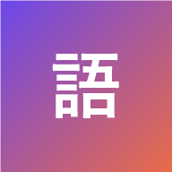
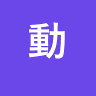
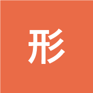

Japonês SRS
O que você quer estudar?


Dá pra trocar de modo a qualquer hora pelo topo do app.
📖 Como o app funciona
Níveis e intervalos
Cada palavra tem um nível de 0 a 6, e cada nível define em quantos dias ela volta:
| Nível | 0 | 1 | 2 | 3 | 4 | 5 | 6 |
|---|---|---|---|---|---|---|---|
| Volta em | hoje | 1d | 3d | 7d | 14d | 30d | 60d |
- Novo: nível 0 ou 1.
- Praticando: nível 2 ou 3 (verbos: também nível 4+ sem 2 acertos em Frases).
- Aprendido: nível 4+ (verbos: e 2 acertos no modo Frases).
Uma palavra nova precisa de 2 acertos em dias diferentes para chegar em Praticando.
🗂️ Cards (o principal)
A rodada do dia é: revisões vencidas + palavras novas até o limite diário.
- Sabia: sobe um nível e só volta depois do intervalo.
- Praticar mais: volta ao nível 0 e reaparece 3 cards depois, na mesma rodada, até você acertar.
- ✓ Já sei essa (só em palavras novas): vai direto para Aprendido e volta só na revisão de 14 dias. Não gasta o limite do dia.
- Novas por dia: 10, 20 (padrão), 30, 50 ou sem limite. Cada modo conta as suas novas separadamente.
- Acabou a rodada e ainda tem novas? Toque em +10 novas.
Repetir no mesmo dia uma palavra que você já acertou não ajuda a memorizar; o que fixa é revisar depois de alguns dias. Por isso só os erros voltam na mesma rodada.
✏️ Escrita
Treino extra com as palavras em Praticando ou Aprendido. Aparece a frase em português já conjugada (ex.: "não comeu", "não era grande") e você escreve em japonês — vale romaji, hiragana, katakana ou kanji. Acertou: sobe um nível. Errou: desce um, mas nunca abaixo de Praticando.
💬 Frases (só verbos)
Frases de exemplo para lembrar o verbo em contexto. São necessários 2 acertos aqui para um verbo ficar Aprendido.
💾 Seu progresso
Fica salvo no navegador deste aparelho. Desinstalar o app ou limpar os dados do site apaga tudo — use ⬇ Exportar progresso (no fim das abas "Todos os verbos" e "Todos os Adjetivos", um arquivo por modo) para ter um backup.